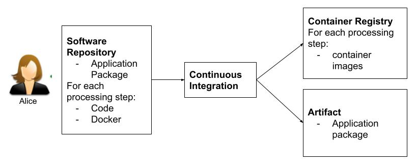
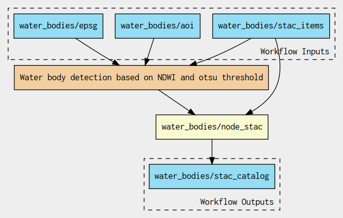
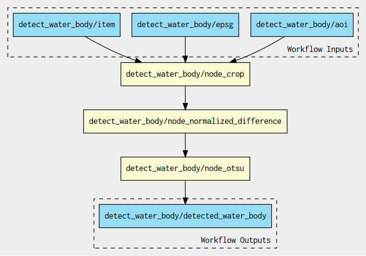

Alice
Water bodies detection Application Package development and test¶
Alice implements the application package

This Application Package takes as input Copernicus Sentinel-2 data and detects water bodies by applying the Otsu thresholding technique on the Normalized Difference Water Index (NDWI).
The NDWI is calculated with:
Typically, NDWI values of water bodies are larger than 0.2 and built-up features have positive values between 0 and 0.2.
Vegetation has much smaller NDWI values, which results in distinguishing vegetation from water bodies easier.
The NDWI values correspond to the following ranges:
| Range | Description |
|---|---|
| 0,2 - 1 | Water surface |
| 0.0 - 0,2 | Flooding, humidity |
| -0,3 - 0.0 | Moderate drought, non-aqueous surfaces |
| -1 - -0.3 | Drought, non-aqueous surfaces |
To ease the determination of the water surface/non water surface, the Ostu thresholding technique is used.
In the simplest form, the Otsu algorithm returns a single intensity threshold that separate pixels into two classes, foreground and background. This threshold is determined by minimizing intra-class intensity variance, or equivalently, by maximizing inter-class variance:

The Water Bodies detection steps are depicted below:
graph TB
A[STAC Items] --> B
A[STAC Items] --> C
subgraph Process STAC item
B["crop(green)"] --> D[Normalized difference];
C["crop(nir)"] --> D[Normalized difference];
D --> E[Otsu threshold]
end
E --> F[Create STAC]The application takes a list of Sentinel-2 STAC items references, applies the crop over the area of interest for the radiometric bands green and NIR, the normalized difference, the Ostu threshold and finaly creates a STAC catalog and items for the generated results.
Alice organizes the Application Package to include a macro workflow that reads the list of Sentinel-2 STAC items references, launches a sub-workflow to detect the water bodies and creates the STAC catalog:

The sub-workflow applies the crop, Normalized difference, Otsu threshold steps:

The development and test dataset is made of two Sentinel-2 acquisitions:
| Acquisitions | ||
|---|---|---|
| Date | 2021-07-13 | 2022-05-24 |
| URL | S2B_10TFK_20210713_0_L2A | S2A_10TFK_20220524_0_L2A |
| Quicklook |  |
|
Alice uses an IDE to implement and test the application.
Each Command Line Tool step such as crop, Normalized difference, Otsu threshold and Create STAC runs a Python script in a dedicated container.
Hands-on¶
Once the Code Server instance is up, open a new Terminal and create the Python environments to run the Application Package steps:
mamba create -c conda-forge -y -p /srv/conda/envs/env_crop gdal click pystac
mamba create -c conda-forge -y -p /srv/conda/envs/env_norm_diff click gdal
mamba create -c conda-forge -y -p /srv/conda/envs/env_otsu gdal scikit-image click
mamba create -c conda-forge -y -p /srv/conda/envs/env_stac click pystac python=3.9 pip && \
/srv/conda/envs/env_stac/bin/pip install rio_stac
mamba clean --all -f -y
jovyan@jupyter-cwl-2dfor-2deo-2dvscode-2dbinder-2dv5n1yyn4:~/ogc-eo-application-package-hands-on/water-bodies$ mamba create -c conda-forge -y -p /srv/conda/envs/env_crop gdal click pystac
-forge -y -p /srv/conda/envs/env_norm_diff click gdal
mamba create -c conda-forge -y -p /srv/conda/envs/env_otsu gdal scikit-image click
mamba create -c conda-forge -y -p /srv/conda/envs/env_stac click pystac python=3.9 pip && \
/srv/conda/envs/env_stac/bin/pip install rio_stac
mamba clean --all -f -y
__ __ __ __
/ \ / \ / \ / \
/ \/ \/ \/ \
███████████████/ /██/ /██/ /██/ /████████████████████████
/ / \ / \ / \ / \ \____
/ / \_/ \_/ \_/ \ o \__,
/ _/ \_____/ `
|/
███╗ ███╗ █████╗ ███╗ ███╗██████╗ █████╗
████╗ ████║██╔══██╗████╗ ████║██╔══██╗██╔══██╗
██╔████╔██║███████║██╔████╔██║██████╔╝███████║
██║╚██╔╝██║██╔══██║██║╚██╔╝██║██╔══██╗██╔══██║
██║ ╚═╝ ██║██║ ██║██║ ╚═╝ ██║██████╔╝██║ ██║
╚═╝ ╚═╝╚═╝ ╚═╝╚═╝ ╚═╝╚═════╝ ╚═╝ ╚═╝
mamba (1.2.0) supported by @QuantStack
GitHub: https://github.com/mamba-org/mamba
Twitter: https://twitter.com/QuantStack
█████████████████████████████████████████████████████████████
...
...
Will remove 1 package cache(s).
Code inspection¶
Get yourself familiar with what the command line tools do when invoked.
- Inspect each of the command line tools
crop,norm_diff,otsuandstacPython script - Inspect each of the
Dockerfile
Application Package execution¶
- Go to
Terminalto open a new terminal - Run the water bodies detection Application Package with:
cwltool --no-container app-package.cwl#water_bodies params.yml > out.json
cwltool is a Common Workflow Language runner.
The flag --no-container is used to instruct cwltool to use the local command-line tools instead of using the containers as Binder cannot launch containers.
app-package.cwl#water_bodies defines the CWL file to execute and instructs cwltool which element to run. Here it's the Workflow with the id water_bodies.
The file params.yml contains the parameters:
stac_items:
- "https://earth-search.aws.element84.com/v0/collections/sentinel-s2-l2a-cogs/items/S2B_10TFK_20210713_0_L2A"
- "https://earth-search.aws.element84.com/v0/collections/sentinel-s2-l2a-cogs/items/S2A_10TFK_20220524_0_L2A"
aoi: "-121.399,39.834,-120.74,40.472"
epsg: "EPSG:4326"
The cwltool execution prints:
jovyan@jupyter-cwl-2dfor-2deo-2dvscode-2dbinder-2dv5n1yyn4:~/ogc-eo-application-package-hands-on/water-bodies$ cwltool --no-container app-package.cwl#water_bodies params.yml > out.json
INFO /srv/conda/envs/notebook/bin/cwltool 3.1.20221201130942
INFO Resolved 'app-package.cwl#water_bodies' to 'file:///home/jovyan/ogc-eo-application-package-hands-on/water-bodies/app-package.cwl#water_bodies'
INFO [workflow ] start
INFO [workflow ] starting step node_water_bodies
INFO [step node_water_bodies] start
INFO [workflow node_water_bodies] start
INFO [workflow node_water_bodies] starting step node_crop
INFO [step node_crop] start
INFO [job node_crop] /tmp/hgboee9w$ python \
-m \
app \
--aoi \
-121.399,39.834,-120.74,40.472 \
--band \
green \
--epsg \
EPSG:4326 \
--input-item \
https://earth-search.aws.element84.com/v0/collections/sentinel-s2-l2a-cogs/items/S2B_10TFK_20210713_0_L2A
INFO [job node_crop] Max memory used: 67MiB
INFO [job node_crop] completed success
...
...
INFO [workflow ] starting step node_stac
INFO [step node_stac] start
INFO [job node_stac] /tmp/l9b37lie$ python \
-m \
app \
--input-item \
https://earth-search.aws.element84.com/v0/collections/sentinel-s2-l2a-cogs/items/S2B_10TFK_20210713_0_L2A \
--water-body \
/tmp/3_ithdmj/stg6a24fafc-7f9f-498a-b0c8-259811c7c959/otsu.tif \
--input-item \
https://earth-search.aws.element84.com/v0/collections/sentinel-s2-l2a-cogs/items/S2A_10TFK_20220524_0_L2A \
--water-body \
/tmp/3_ithdmj/stg5a6afa0d-1926-4256-83f1-c5f7ba4edeab/otsu.tif
INFO [job node_stac] Max memory used: 47MiB
INFO [job node_stac] completed success
INFO [step node_stac] completed success
INFO [workflow ] completed success
INFO Final process status is success
Once the workflow execution is completed, there's a folder with the results generated.
The JSON file out.json is a manifest containing the listing of the results included in that folder:
{
"stac_catalog": {
"location": "file:///home/jovyan/ogc-eo-application-package-hands-on/water-bodies/l9b37lie",
"basename": "l9b37lie",
"class": "Directory",
"listing": [
{
"class": "Directory",
"location": "file:///home/jovyan/ogc-eo-application-package-hands-on/water-bodies/l9b37lie/S2A_10TFK_20220524_0_L2A",
"basename": "S2A_10TFK_20220524_0_L2A",
"listing": [
{
"class": "File",
"location": "file:///home/jovyan/ogc-eo-application-package-hands-on/water-bodies/l9b37lie/S2A_10TFK_20220524_0_L2A/S2A_10TFK_20220524_0_L2A.json",
"basename": "S2A_10TFK_20220524_0_L2A.json",
"checksum": "sha1$de27e30c1e40ac0c2cb41f66f25e0258f4a6fdbc",
"size": 4870,
"path": "/home/jovyan/ogc-eo-application-package-hands-on/water-bodies/l9b37lie/S2A_10TFK_20220524_0_L2A/S2A_10TFK_20220524_0_L2A.json"
},
{
"class": "File",
"location": "file:///home/jovyan/ogc-eo-application-package-hands-on/water-bodies/l9b37lie/S2A_10TFK_20220524_0_L2A/otsu.tif",
"basename": "otsu.tif",
"checksum": "sha1$f8b7daf9c86b0271a813a0948e0edb947e5f2773",
"size": 175932,
"path": "/home/jovyan/ogc-eo-application-package-hands-on/water-bodies/l9b37lie/S2A_10TFK_20220524_0_L2A/otsu.tif"
}
],
"path": "/home/jovyan/ogc-eo-application-package-hands-on/water-bodies/l9b37lie/S2A_10TFK_20220524_0_L2A"
},
{
"class": "File",
"location": "file:///home/jovyan/ogc-eo-application-package-hands-on/water-bodies/l9b37lie/catalog.json",
"basename": "catalog.json",
"checksum": "sha1$f7214df9b2be4df8b704b4bbe73cdf76b30b0ca6",
"size": 525,
"path": "/home/jovyan/ogc-eo-application-package-hands-on/water-bodies/l9b37lie/catalog.json"
},
{
"class": "Directory",
"location": "file:///home/jovyan/ogc-eo-application-package-hands-on/water-bodies/l9b37lie/S2B_10TFK_20210713_0_L2A",
"basename": "S2B_10TFK_20210713_0_L2A",
"listing": [
{
"class": "File",
"location": "file:///home/jovyan/ogc-eo-application-package-hands-on/water-bodies/l9b37lie/S2B_10TFK_20210713_0_L2A/S2B_10TFK_20210713_0_L2A.json",
"basename": "S2B_10TFK_20210713_0_L2A.json",
"checksum": "sha1$fe3860a19aabba59561d1410070e1a2378769b4a",
"size": 4870,
"path": "/home/jovyan/ogc-eo-application-package-hands-on/water-bodies/l9b37lie/S2B_10TFK_20210713_0_L2A/S2B_10TFK_20210713_0_L2A.json"
},
{
"class": "File",
"location": "file:///home/jovyan/ogc-eo-application-package-hands-on/water-bodies/l9b37lie/S2B_10TFK_20210713_0_L2A/otsu.tif",
"basename": "otsu.tif",
"checksum": "sha1$4bc4935a02b7de7d2460d05b3a3c4bf92557b8d3",
"size": 99746,
"path": "/home/jovyan/ogc-eo-application-package-hands-on/water-bodies/l9b37lie/S2B_10TFK_20210713_0_L2A/otsu.tif"
}
],
"path": "/home/jovyan/ogc-eo-application-package-hands-on/water-bodies/l9b37lie/S2B_10TFK_20210713_0_L2A"
}
],
"path": "/home/jovyan/ogc-eo-application-package-hands-on/water-bodies/l9b37lie"
}
}
Result inspection¶
If you're running the Hands-on on Binder, you can inspect and plt the results with a Jupyter Notebook.
The results are inspected and visualized with the visualization.ipynb notebook on JupyterLab by running all cells. This notebook uses pystac to access the geotiffs produced, leafmap to plot the tiles served by a local tile server.
Technically, the notebook parses the results produced looking for the STAC Catalog file catalog.json and adds the STAC items' data asset on the map.